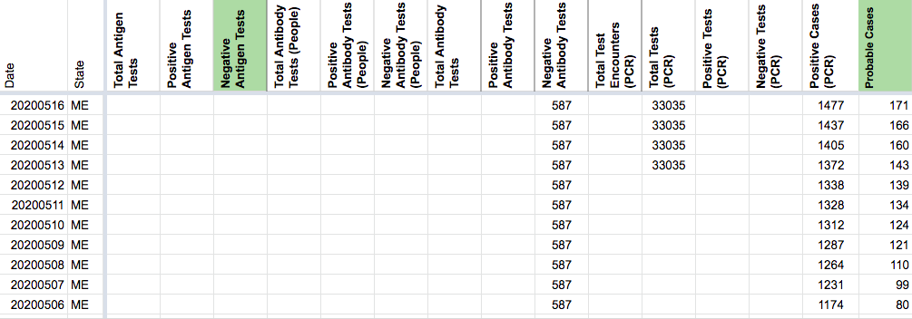
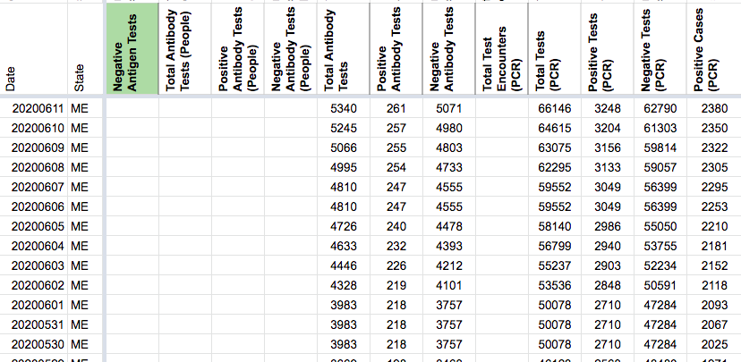

[ME] Explicit Probables Backfill
Issue number 837
jesseandersonumd opened this issue on September 16, 2020 at 9:00 am
Labels Historical Data Backfill
State or US: ME
Describe the problem CTP started reporting probables on 7/28. ME started reporting values for probables on 5/4, and we can reasonably backfill by calculating positive (confirmed + probables) - positive PCR cases back until 5/4.
Link to data source
- CTP screenshots [https://covidtracking.com/data/state/maine/screenshots] 5/4-7/28
PROPOSED VALUES (from 5/4-9/15)
503 502 487 485 475 473 476 469 471 472 470 468 472 467 467 466 465 457 455 453 447 449 446 445 445 438 441 435 432 430 421 418 418 410 408 406 408 417 417 415 415 424 427 429 423 421 413 411 409 405 410 406 403 400 403 402 423 424 421 394 397 391 392 398 399 396 389 389 394 395 390 389 387 385 388 377 372 360 356 353 345 344 339 337 339 331 328 328 327 323 327 320 315 307 305 301 287 287 284 283 275 271 272 265 266 259 256 258 257 255 238 223 215 216 210 209 199 199 187 180 180 176 171 166 160 143 139 134 124 121 110 99 80 76 69
Comments
AFTER: 
BEFORE: 